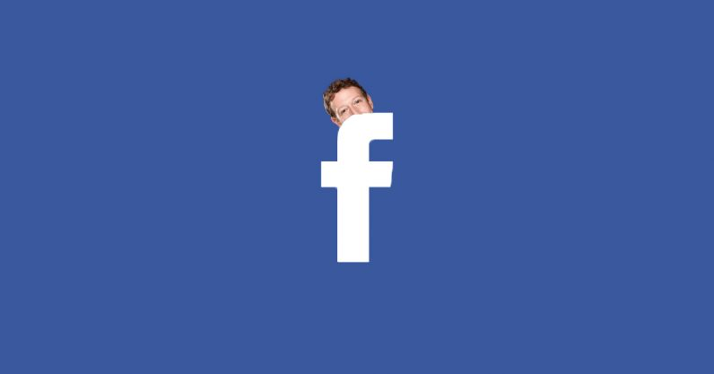
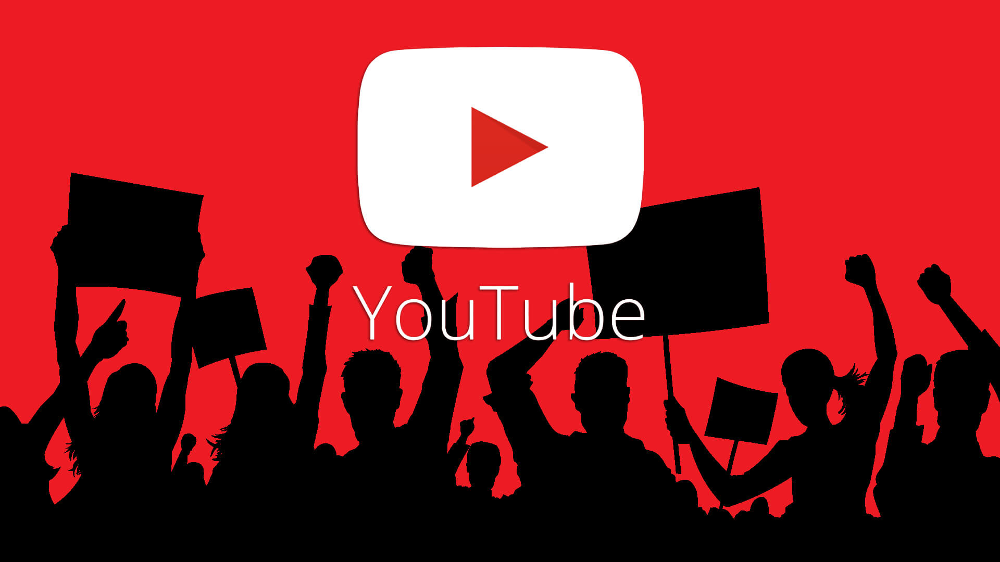

clip-path : circle
Facebook

Facebook (stylized as facebook) is an American online social media and social networking service based in Menlo Park, California and a flagship service of the namesake company Facebook, Inc. It was founded by Mark Zuckerberg, along with fellow Harvard College students and roommates Eduardo Saverin, Andrew McCollum, Dustin Moskovitz and Chris Hughes.
The founders initially limited Facebook membership to Harvard students. Membership was expanded to Columbia, Stanford, and Yale before being expanded to the rest of the Ivy League, MIT, and higher education institutions in the Boston area, then various other universities, and lastly high school students. Since 2006, anyone who claims to be at least 13 years old has been allowed to become a registered user of Facebook, though this may vary depending on local laws. The name comes from the face book directories often given to American university students.
Facebook can be accessed from devices with Internet connectivity, such as personal computers, tablets and smartphones. After registering, users can create a profile revealing information about themselves. They can post text, photos and multimedia which is shared with any other users that have agreed to be their "friend", or, with a different privacy setting, with any reader. Users can also use various embedded apps, join common-interest groups, buy and sell items or services on Marketplace, and receive notifications of their Facebook friends' activities and activities of Facebook pages they follow. Facebook claimed that it had more than 2.3 billion monthly active users as of December 2018,[8] and it was the most downloaded mobile app of the 2010s globally.[9]
Facebook has been subject to extensive media coverage and many controversies, often involving user privacy (as with the Cambridge Analytica data scandal), political manipulation (as with the 2016 U.S. elections), psychological effects such as addiction and low self-esteem, and content such as fake news, conspiracy theories, copyright infringement, and hate speech.[10] Commentators have accused Facebook of willingly facilitating the spread of such content.Zuckerberg built a website called "Facemash" in 2003 while attending Harvard University. The site was comparable to Hot or Not and used "photos compiled from the online face books of nine Houses, placing two next to each other at a time and asking users to choose the "hotter" person".[16]
clip-path : ellipse
Youtube

YouTube is an American online video-sharing platform headquartered in San Bruno, California. Three former PayPal employees—Chad Hurley, Steve Chen, and Jawed Karim—created the service in February 2005. Google bought the site in November 2006 for US$1.65 billion; YouTube now operates as one of Google's subsidiaries.
YouTube allows users to upload, view, rate, share, add to playlists, report, comment on videos, and subscribe to other users. It offers a wide variety of user-generated and corporate media videos. Available content includes video clips, TV show clips, music videos, short and documentary films, audio recordings, movie trailers, live streams, and other content such as video blogging, short original videos, and educational videos. Most content on YouTube is uploaded by individuals, but media corporations including CBS, the BBC, Vevo, and Hulu offer some of their material via YouTube as part of the YouTube partnership program. Unregistered users can only watch (but not upload) videos on the site, while registered users are also permitted to upload an unlimited number of videos and add comments to videos. Videos that are age-restricted are available only to registered users affirming themselves to be at least 18 years old.
YouTube and selected creators earn advertising revenue from Google AdSense, a program which targets ads according to site content and audience. The vast majority of its videos are free to view, but there are exceptions, including subscription-based premium channels, film rentals, as well as YouTube Music and YouTube Premium, subscription services respectively offering premium and ad-free music streaming, and ad-free access to all content, including exclusive content commissioned from notable personalities. As of February 2017, there were more than 400 hours of content uploaded to YouTube each minute, and one billion hours of content being watched on YouTube every day. As of August 2018, the website is ranked as the second-most popular site in the world, according to Alexa Internet, just behind Google.[2] As of May 2019, more than 500 hours of video content are uploaded to YouTube every minute.[7] Based on reported quarterly advertising revenue, YouTube is estimated to have US$15 billion in annual revenues.
YouTube has faced criticism over aspects of its operations, including its handling of copyrighted content contained within uploaded videos,[8] its recommendation algorithms perpetuating videos that promote conspiracy theories and falsehoods,[9] hosting videos ostensibly targeting children but containing violent and/or sexually suggestive content involving popular characters,[10] videos of minors attracting pedophilic activities in their comment sections,[11] and fluctuating policies on the types of content that is eligible to be monetized with advertising.[
clip-path : inset
Twitter

Creation and initial reaction
A sketch, c. 2006, by Jack Dorsey, envisioning an SMS-based social network.
Twitter's origins lie in a "daylong brainstorming session" held by board members of the podcasting company Odeo. Jack Dorsey, then an undergraduate student at New York University, introduced the idea of an individual using an SMS service to communicate with a small group.[25][26] The original project code name for the service was twttr, an idea that Williams later ascribed to Noah Glass,[27] inspired by Flickr and the five-character length of American SMS short codes. The decision was also partly due to the fact that the domain twitter.com was already in use, and it was six months after the launch of twttr that the crew purchased the domain and changed the name of the service to Twitter.[28] The developers initially considered "10958" as a short code, but later changed it to "40404" for "ease of use and memorability".[29] Work on the project started on March 21, 2006, when Dorsey published the first Twitter message at 9:50 p.m. Pacific Standard Time (PST): "just setting up my twttr".[4] Dorsey has explained the origin of the "Twitter" title:
...we came across the word 'twitter', and it was just perfect. The definition was 'a short burst of inconsequential information,' and 'chirps from birds'. And that's exactly what the product was.[30]
The first Twitter prototype, developed by Dorsey and contractor Florian Weber, was used as an internal service for Odeo employees[31] and the full version was introduced publicly on July 15, 2006.[13] In October 2006, Biz Stone, Evan Williams, Dorsey, and other members of Odeo formed Obvious Corporation and acquired Odeo, together with its assets — including Odeo.com and Twitter.com — from the investors and shareholders.[32] Williams fired Glass, who was silent about his part in Twitter's startup until 2011.[33] Twitter spun off into its own company in April 2007.[34] Williams provided insight into the ambiguity that defined this early period in a 2013 interview:
With Twitter, it wasn't clear what it was. They called it a social network, they called it microblogging, but it was hard to define, because it didn't replace anything. There was this path of discovery with something like that, where over time you figure out what it is. Twitter actually changed from what we thought it was in the beginning, which we described as status updates and a social utility. It is that, in part, but the insight we eventually came to was Twitter was really more of an information network than it is a social network.